Finderscope AI
Your offline guide to the night sky.
Hold your phone up and see what is there. Know what is worth seeing tonight, and when the sky is truly dark. Ask Orin, an AI astronomy guide that runs on your phone. Work out what your telescope can show, and keep a log of every night. It all works at a dark site with no signal.
- Works with no signal
- No account, no ads
- True red night mode
- Orin, AI on your phone
- Pro once, never a subscription

Know what is worth seeing before you step outside.
Tonight lays out your night as a timeline: sunset, the twilights, full darkness and dawn, with the Moon's hours drawn across it, so the moon-free dark hours stand out at a glance. Then which planets are up and when, and the best deep-sky targets for your place right now. One tap hands it all to Orin: Ask Orin to plan my night.
The dark hours, at a glance
Astronomical darkness with the Moon taken out, worked out on your phone for your exact place and date.
Best for your telescope PRO
Tell Finderscope which telescope and eyepieces you use, and Tonight picks the targets they can actually show you.
Clouds, if you want them LIVE
Turn on live sky data and tonight's clearest window joins the headline, from the US National Weather Service, or Environment Canada's global forecast elsewhere. Pro adds the coming nights.
On Android, a home-screen widget keeps tonight in view: it counts down to dark and follows the Moon, with no network and without opening the app.
Hold it up. The sky answers.
Tap Follow phone and hold your phone to the sky: the stars, planets and constellation lines appear where you point. Drag to look around, pinch to zoom, tap anything to learn what it is. Every star sits at its catalog position for your place and moment, in its own true color.
Over 31,000 stars, free
The Bright Star Catalogue and the Henry Draper stars, with real colors and names. Pro adds the deep-star layer: about 10 million stars, far fainter than the eye can see.
Find anything
Type or say a name, like Jupiter, M42 or Orion. Each answer says whether it is up now and where to look, and opens the map aimed at it.
Camera sky view
Labels over the live camera for the bright stars, the planets, the Moon and the brighter deep-sky objects. It tells you that a phone's compass is often a few degrees off.
All 88 constellations
Watch each figure trace itself star by star, and for many of them, the old stories quoted from classic books of star lore.
Any place, any time
Use your location, or pick from thousands of towns built into the app with no connection. The sky is worked out on the phone, never downloaded as pictures.
Read aloud
Tonight, the Moon, the planets and most other screens read themselves aloud at a tap, so your eyes can stay on the sky, with star names said the way astronomers say them.
An AI astronomy guide that answers at the dark site.
Orin runs entirely on your phone after a one-time download of about 3 GB, so it answers with no signal, and your questions never leave the phone. Ask what is up, how to find it, what you are looking at, or what to try with your telescope. Orin works from your real place and sky, and from Finderscope's own catalogs.
Turn on hands-free voice and Orin reads every answer aloud, then listens for your next question, so your eyes can stay at the eyepiece.
- Honest about limitsOrin is AI, and AI can be wrong. Positions and times on Finderscope's screens come from the app's own math, never from the AI. Check anything you plan a trip around.
- Sun-safe answersAsk about the Sun and the answer carries the eye-safety warning.
- Free to tryEvery Pro feature for the first 30 days, then 20 questions a day free. Pro makes Orin unlimited.
A true red night mode.
Night mode turns every pixel of every screen red on black, by its brightness, so nothing on the phone outshines the text and nothing spoils your dark adaptation. The eyepiece camera works red on black too.
- Full
- Dim
- Darkest, below the phone's own minimum

Made for the telescope in your yard.
From binoculars to a big Dobsonian, Finderscope works out what your gear can show and helps you find it.
The deep-sky catalog
More than 850 galaxies, nebulae and clusters from the NGC and IC, each with a plain answer to "Can I see it, and with what?": eyes, binoculars, a small or a larger telescope, judged by how bright it is and how spread out its light is. The Messier objects are free; Pro opens the rest.
Set up your telescope PRO
Enter the aperture and focal length of the telescope you use, and your eyepieces, and see each one's magnification, true field and limits as you type. Free: the telescope calculator and an eyepiece and Barlow simulator.
Eyepiece camera PRO
Hold the phone to the eyepiece: a focus aid, frame stacking, and star-field identification against Finderscope's star catalog, which says it found the field only when the match checks out.
Your observing log
Log what you saw, with what and how it looked, by typing or by voice, stored encrypted on your phone. Pro exports the log as a spreadsheet file.
Observing lists PRO
Herschel's objects, carbon stars, the named stars and their cultures, variable stars and double stars, ready for a night's tour.
Every event in your sky, from where you stand.
The Moon, planets, eclipses and meteor showers are worked out on your phone. Items marked LIVE come straight from the agency that publishes them, only when you turn on live sky data.
The Moon
Its phase, where it is in your sky, tonight's rise and set, the next four phases, and when it passes in front of bright stars and planets over the next 30 days.
The planets
Where every planet is and when it can be seen, from JPL's DE440 ephemeris, with Jupiter's four great moons as they line up right now.
Meteor showers
Twelve months of peaks, each with its rate, the radiant's height from your place, the Moon at peak and your best hours.
Eclipses to 2050
Solar and lunar, and whether you can see each one: the local circumstances are worked out on your phone from NASA's published eclipse elements.
Satellites and the ISS LIVE
Naked-eye passes of the ISS, Hubble, Tiangong and the bright satellites over you, with orbits kept for offline use, and which part of a pass clears your real skyline.
Aurora and space weather LIVE
The Kp index from NOAA and whether aurora could reach your latitude tonight.
Comets, asteroids and fireballs LIVE
Notable comets, close approaches and recent bright fireballs, from NASA JPL.
The Sun, launches and pictures LIVE
Today's Sun from NASA's Solar Dynamics Observatory, upcoming rocket launches, NASA images and video, and the ESO and NOIRLab Picture of the Week.
Sky alerts
A note for meteor-shower peaks, eclipses you can see and the Moon's phases, scheduled on your phone. Pro adds ISS passes, strong aurora and tonight's dark window.
Find the dark. Know your horizon.
Your true horizon PRO
The real skyline at your sites: hills, trees and buildings, from published lidar, tree-height and terrain data where it exists, plus what you trace with the camera. Rise and set times then use it.
The dark-sky map
How bright the sky glows where you are, worked out on the phone, and with live sky data on, NASA's satellite map of the night lights. With Pro, scout the darkest, lowest-horizon spots near you.
The offline topo map PRO
USGS topographic maps, saved on your phone as you view them with live sky data on, so they work later with no signal, with sun times for wherever the map is centered.
A real planetarium for free. Everything, once, with Pro.
Free
Free to download and free to keep.
- The sky map with over 31,000 stars, the 88 constellations and search
- Tonight, the planets, the Moon, the Sun, eclipses and meteor showers
- The Messier objects, with how to see each one
- Satellite passes, launches, aurora, comets and NASA media, with live sky data on
- True red night mode and hands-free voice
- The telescope calculator and your observing log
- Orin, with 20 questions a day
Pro
$19.99 once. Everything, for good. Never a subscription.
- Unlimited Orin
- The full deep-sky catalog and about 10 million faint stars
- Profiles for the telescope and eyepieces you use
- The eyepiece camera
- Observing lists
- Your true horizon and dark-spot scouting
- The multi-day cloud forecast and more sky alerts
- The offline topo map and log export
Every Pro feature is on for your first 30 days, with no card and nothing to cancel. After that Finderscope keeps working in its free mode. Prices can differ by country; the store shows yours before you buy.
Yours, on your phone.
Never look at the Sun through a telescope, binoculars or a finder, or with your eyes alone, without a certified solar filter. Permanent eye damage can happen instantly.